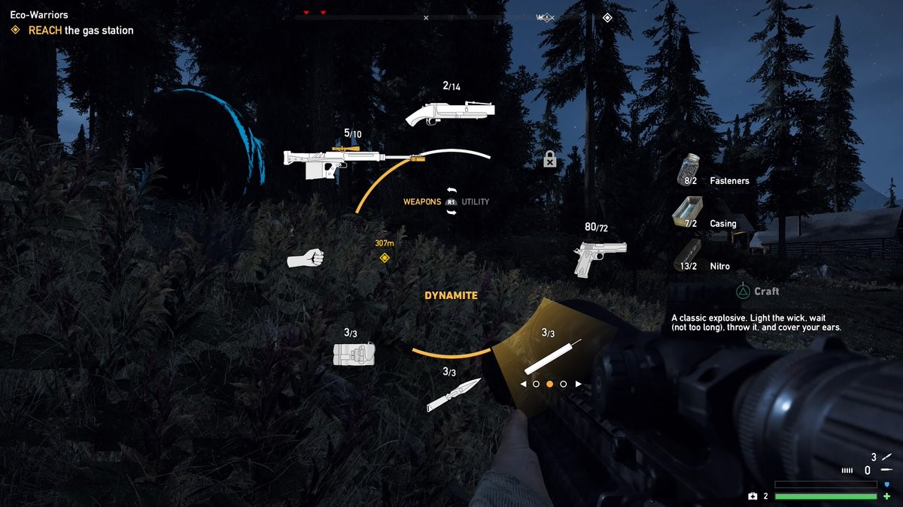

These are some of my usability reviews of games. I've started writing these for practice and for the purpose of developing a more more critical mindset towards the games I play. I'm still new to these, so enough practice will eventually result in better, incisive reviews.
Far Cry 5 is Ubisoft Montreal and Ubisoft Toronto’s newest entry in the Far Cry series, released on March 27, 2018. I played this from March 29th to April 6th for this review. I’ll be looking at some usability issues that Far Cry 5 has, some of them quite unusual. I played this on the PS4. I’ll be listing each issue as either Severe, Major, or Minor. I've also written my suggested fixes in blue.
The game is composed of 3 different regions controlled by different cult leaders. I’ve played up to the point where I’ve ‘beaten’ one region, meaning beaten the boss of that region, not necessarily having done all the side or main tasks.
- Saving the game (Minor)
- Inconsistent game logic (Minor) 
- Normally, shooting games give you two numbers for every gun: current bullets and bullets in reserve. Look at the Halo series, Half-life series, or most other shooters. This is different for some games, like Overwatch, but that’s because every character within that game has infinite ammo. This is also different for Far Cry 5. Take a look at the grenade launcher at the top-most part of the wheel, where the ammo is 2/14. The 2 on the left demonstrates the total ammo I have left, but the 14 on the right signifies the maximum ammo I can have. However, you can actually exceed the total number of bullets as you can see above with the pistol, right-most along the wheel. The fact that the total number of bullets can be exceeded only supports the false idea of the number split being current bullets/bullets in reserve. This has created moments in the beginning of the game where I think I have bullets remaining and run into a losing fight because I actually lack ammo. This mechanic fights against experienced players’ gaming literacy. I’m not completely sure why the game allows you to exceed the cap, but my best guess is that the number on the right possibly represents the max amount of bullets you can have in reserve. I think this is an easily solvable issue, as you can actually change the numbers to mean current bullets/bullets in reserve, and have both numbers adjust based on players firing and reloading guns. It doesn’t detract from the game experience and is simple to alter.
- The menu doesn’t have a consistent swapping mechanic. As shown in the picture above, you can use the directional pad on the PS4 to swap between your explosives, as highlighted. However, to swap between bullets or firing style of a gun, you have to use the square or triangle button. It would have been more understandable to limit the number of controls that a player should learn for the menu and mapping something like the firing mode (burst, single fire, spray) to the directional pad as well.
- Some weapons can be reloaded when you fire an empty chamber while aiming while others can’t, specifically, the RPG. This increases the already long reload time for the gun and it’s put me in positions where I take more damage than I should just hitting the fire button and expecting it to reload.
- Unclear instructions (Severe) For how often the game introduces new mechanics to consider, it can be unclear about what you specifically have to do.
- Pistol takedowns are a perk you can buy in the game to use an opponent’s pistol against the rest of his allies, but the instructions on how to do this are unclear. There’s no indication given that it’s only usable when an opponent has a side-arm and is within a certain distance of their allies. A simple google of Far Cry 5 pistol takedown shows that this is a common confusion point. Demonstrate the execution of these abilities through a slowed-down video of the process and this would clear up any issues.
- The game also has a mechanic when a player is dying called ‘Cling to life’. This only works when you have allies, but the game still presents you with that option if you don’t have anyone fighting with you. When I died in the beginning after trying to tackle a large mob head-on, the ‘Cling to life’ button appeared and I had no idea what was happening. It didn’t say whether to press the button once, hold it, or mash the button so I tried a combination of all 3 and still died. I later on learned that this only works with allies but am still unsure of which of the 3 is the correct action. A quick tutorial the first time this happens that explains in what situations it’s possible to Cling to Life and what situations might be better to just allow yourself to die would help tremendously.
- A few weapons (bows and grenade launchers) have range indicators along their scopes to show which part of the scope you should be using to aim with. The compass, and tagging, do not show how far the enemy is, so I’m never sure which part of the scope to use. You can adjust this by telling the player how far an enemy is if they’re zoomed in with those weapons.
- Lack of freedom within a free space (Major)
- There isn’t a level-up system so players don’t get points to add to skills depending on experience or anything like that. There are only 3 ways to get perks: beating a region, finding perk magazines, or beating challenges. The most consistent way to obtain perks is through completing challenges, but this also limits player freedom. These challenges usually include killing a certain number of people using a specified weapon, method, or ally. It’s unusual that the main method of obtaining skills in a free roaming open world game is so limiting. I suspect that developers chose this to push players to diversify, but I think this brand of forced diversification actually hurts player enjoyment. Some allies take a much longer time to kill to complete their achievements than others do, which means you’re stuck with a weaker ally just to earn skill points to open yourself up to more options to play, which seems contradictory to intentions. I’m not saying remove challenges, but having broader, generalized challenges, like taking out 5 enemies before they see you, allows players to play using any weapon or ally but still encourages players to explore new playstyles.
- There are many points within the game where you are just abducted from where you are and forced into another area. I think this is fine the first time, even interesting as a plot point, but as the game goes on, it becomes tiring to lose control of your character so often. In one region, you are even forced into a boss fight without any warning as soon as you max the resistance bar there. I have been extracted mid-flight in a helicopter into a forced kidnapping sequence. The developers most likely implemented these sequences for narrative and symbolic purposes, demonstrating how these regional warlords keep their areas under control and your own insignificance in the larger scheme of it all. This becomes questionable over the course of multiple kidnappings because you can’t help but wonder, why not just kill the main character? I think there are two choices here that improve this point: allow players a fair chance to fend off kidnappers or reduce the number of these occurrences. Both help players retain their sense of free will within the game world and do not detract from the story.
 Far Cry 5’s saving state is difficult to notice unless you know exactly what you’re looking for. It doesn’t help that you can mash the save button over and over as well, making players think the save feature isn’t working. The picture above is a screenshot taken a second after hitting save.
Players are meant to infer that the game is saving by the 3 white dots in the corner. It’s frustratingly obscure and when new players don’t realize how often the game autosaves, becomes an important issue to address. This is less of an issue later on, when players learn to recognize that it’s saved, and because of the number of moments the game autosaves at. I can understand the minimalist design that was chosen for this, and I actually preferred how this was done compared to traditional displays,
but I think it’s important to at least show players when they save for the first time, through a pop-up that explains what’s happening. It keeps the save as efficient as it is but removes confusion.
Far Cry 5’s saving state is difficult to notice unless you know exactly what you’re looking for. It doesn’t help that you can mash the save button over and over as well, making players think the save feature isn’t working. The picture above is a screenshot taken a second after hitting save.
Players are meant to infer that the game is saving by the 3 white dots in the corner. It’s frustratingly obscure and when new players don’t realize how often the game autosaves, becomes an important issue to address. This is less of an issue later on, when players learn to recognize that it’s saved, and because of the number of moments the game autosaves at. I can understand the minimalist design that was chosen for this, and I actually preferred how this was done compared to traditional displays,
but I think it’s important to at least show players when they save for the first time, through a pop-up that explains what’s happening. It keeps the save as efficient as it is but removes confusion.